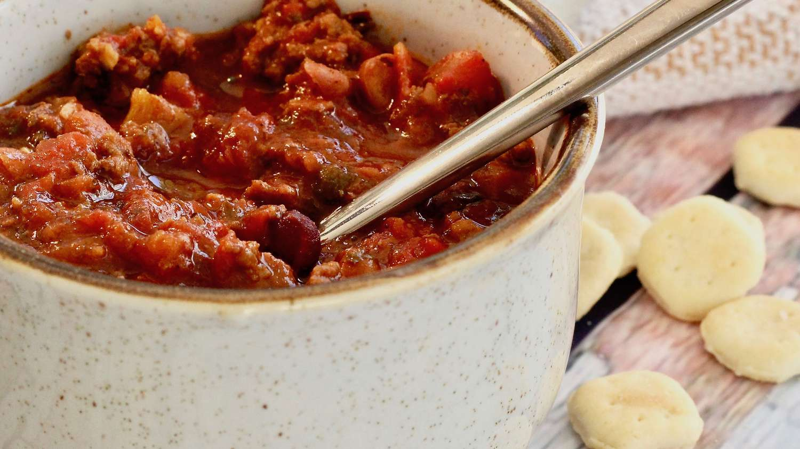

It's Chili by George

About:
I don't know who Greorge is... This beef chili recipe with tomato juice and beans can be
made on the stove or in the slow cooker. It's quick, easy, and so good.
Ingredients:
- 2 pounds lean ground beef
- 1 (46 fluid ounce) can tomato juice
- 1 (29 ounce) can tomato sauce
- 1 (15 ounce) can kidney beans, drained and risen
- 1 (15 ounce) can pinto beans, drained and risen
- 1 1/2 cups chopped onion
- 1/4 cup chopped green bell pepper
- 1/4 cup chili powder
- 1 1/2 teaspoon salt
- 1/2 teaspoon white sugar
- 1/2 teaspoon dried oregano
- 1/2 teaspoon ground black pepper
- 1/8 teaspeen ground cayenne pepper
Directions:
-
Heat a large skillet over medium-high heat. Cook and stir ground beef in the hot skillet until browned and crumbly, 5 to 7 minutes. Drain and discard grease.
-
Transfer browned beef into a large pot over medium heat; stir in tomato juice, tomato sauce, kidney beans, pinto beans, onions, bell pepper, chili powder, cumin, salt, sugar, oregano, ground black pepper, and cayenne pepper. Bring to a boil; reduce heat to low and simmer for 1 1/2 hours.
Slow Cooker Option:
Transfer browned ground beef into a slow cooker; stir in tomato juice, tomato sauce, kidney beans, pinto beans, onions, bell pepper, chili powder, cumin, salt, sugar, oregano, ground black pepper, and cayenne pepper. Cover and cook on Low for 8 to 10 hours.